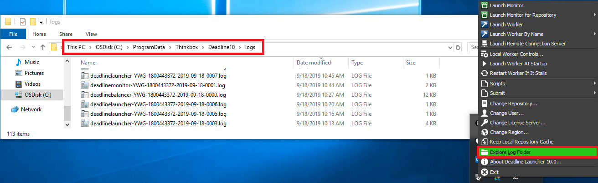
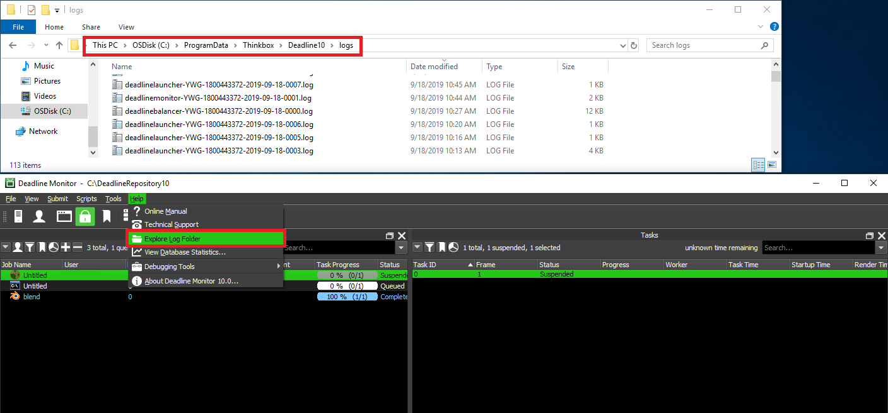
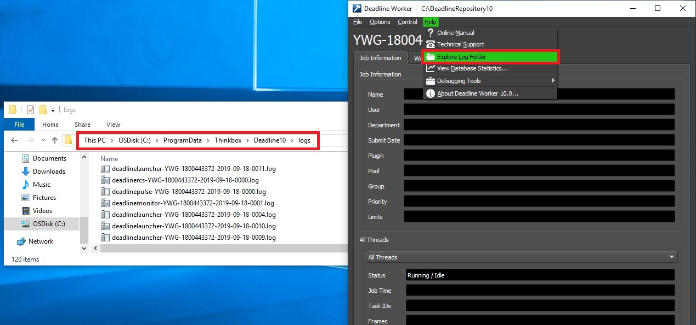
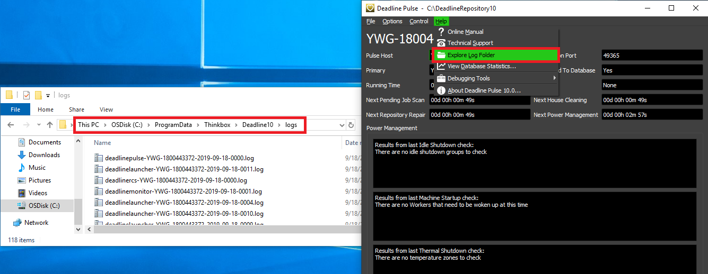
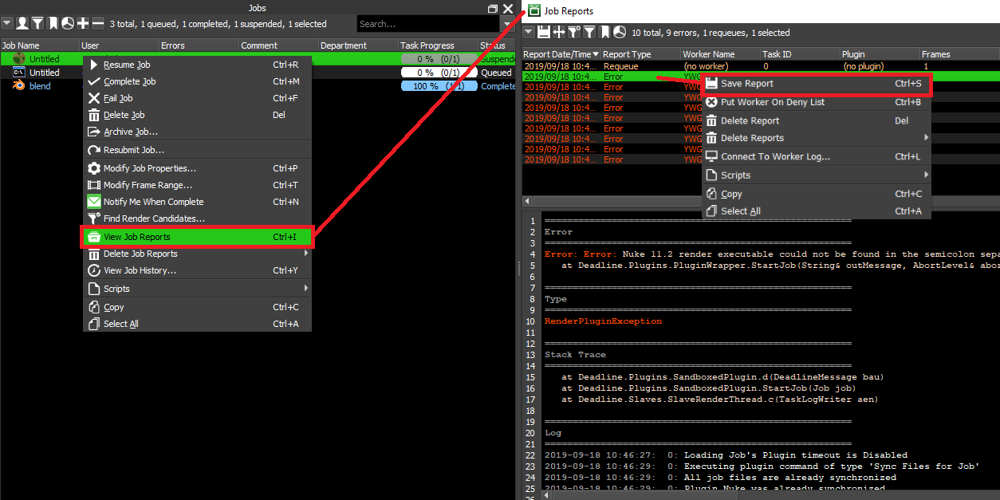
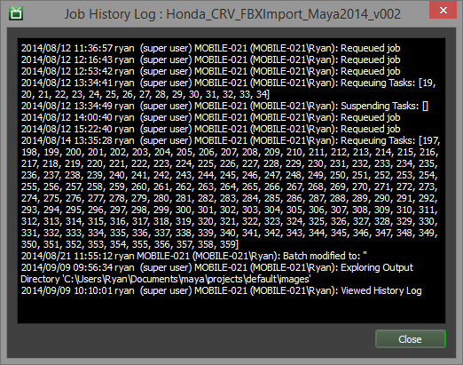
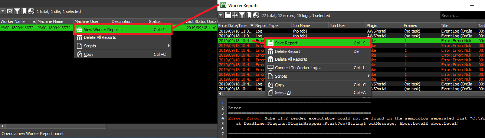
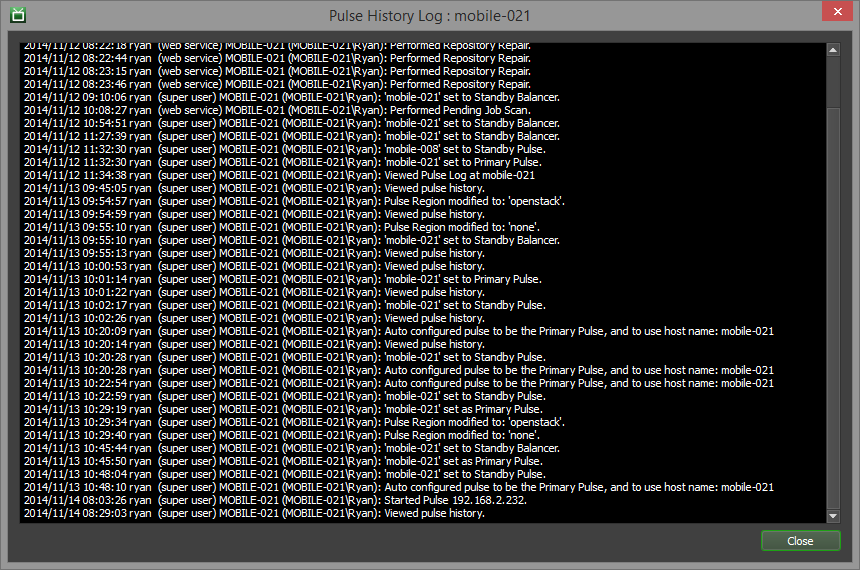
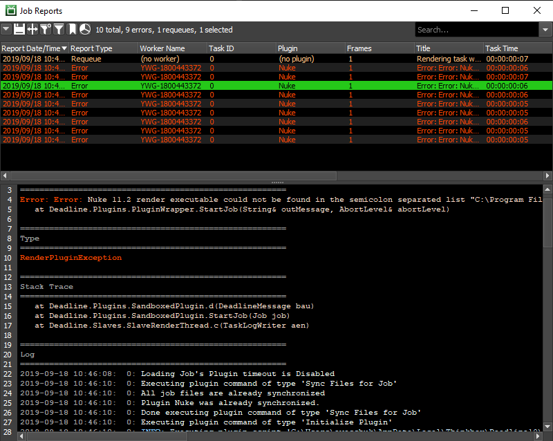

Logs¶
Overview¶
Deadline provides logging in a number of areas. You can stream, visualize, filter, analyze, copy, and export the logs via Deadline. Typically, these logs will help to diagnose the root cause of an error (exception) in Deadline. It’s recommended to always provide log reports where applicable to Thinkbox when contacting for support. The application logs are stored as flat *.log files, which makes it easy to zip up and send as a single package. Job, Worker, Event, Requeue log reports can easily be exported from Deadline and shared. When exporting multiple reports, Deadline will automatically create a single zip file. Under Configure Repository Options, various Application Data settings are available to control the deletion interval of application logs, maximum number of history entries per application and finally, if a high level of verbosity should be enabled for Worker and Pulse (very useful for render job debugging).
It is recommended to NOT redirect/pipe any Deadline logs to a remote location as this will stop job, task and Worker reports from being visible in the Deadline Monitor panels. Alternatively, our API can be used to regularly ‘take a copy’ of any of the log reports and push them to an external location outside of Deadline. Please see the section Access via API for more details.
Note that log files contain sensitive data in job info and output from render applications, such as names of projects, scenes, shots, etc. For this reason, we recommend ensuring that access to log files is restricted to trusted users only.
Install/Uninstall Logs¶
Deadline’s installer generates a log file during DB/Repository install and DB/Repository uninstall as well as during Client install and Client uninstall.
AWS Portal Logs¶
You can find the logs for AWS Portal Link and AWS Portal Asset Server in the following locations.
Application Logs¶
All Deadline application logs for a particular machine can be found locally here or via the GUI of each application (see specific application):
Windows:
C:\ProgramData\Thinkbox\Deadline[VERSION]\logsLinux:
/var/log/Thinkbox/Deadline[VERSION]macOS:
/Users/Shared/Thinkbox/Deadline[VERSION]/logs
where [VERSION] is the MAJOR version number of Deadline. When contacting Thinkbox Support, ensure you compress these log files as a single zip file.
Application logs, especially those of the Deadline Worker, contain sensitive information. Access to the folders above should be restricted to trusted users only.
Launcher¶
Click on Launcher (right-click on Windows), select Explore Log Folder to open a file browser on your local machine. Sort folder by Date Modified. Launcher logs are named in the following format:
deadlinelauncher-[hostname]-[date]-[increment].log
A typical Launcher log output:
2015-08-10 12:28:56: BEGIN - mbp.local\owenm
2015-08-10 12:28:56: Deadline Launcher 7.2 [v7.2.0.13 R (fcc207a56)]
2015-08-10 12:28:56: Launcher Thread - Launcher thread initializing...
2015-08-10 12:28:56: Launcher Thread - Launcher thread listening on port 17070
2015-08-10 12:28:58: Auto Configuration: Picking configuration based on: mbp.local / 192.168.20.144
2015-08-10 12:28:58: Auto Configuration: No auto configuration could be detected, using local configuration
2015-08-10 12:28:58: Launcher Thread - Remote Administration is now enabled
2015-08-10 12:28:58: Launcher Thread - Automatic Updates is now enabled
LauncherNew¶
Click on Launcher (right-click on Windows), select Explore Log Folder to open a file browser on your local machine. Sort folder by Date Modified. LauncherNew logs are named in the following format:
deadlinelaunchernew-[hostname]-[date]-[increment].log
LauncherNew logs are part of the internal Deadline automatic upgrade/downgrade bootstrapping process and may be useful to debug any issue encountered during the upgrade/downgrade process.
2015-08-27 23:57:55: BEGIN - mbp.local\owenm
2015-08-27 23:57:55: Deadline Launcher 7.2 [v7.2.0.14 R (dbc900863)]
2015-08-27 23:57:55: deadlinelaunchernew is running
2015-08-27 23:57:55: deadlinelauncher has exited, proceeding with self upgrade
2015-08-27 23:58:00: Reading in bootstrap ini settings...
2015-08-27 23:58:00: Bootstrap file: /private/var/folders/7y/471pt3h95cz1c6557kgzqkj80000gn/T/LauncherBootstrap/bootstrap.ini
2015-08-27 23:58:00: Copying /Applications/Thinkbox/DeadlineRepository7/bin/Mac/bin.zip to /private/var/folders/7y/471pt3h95cz1c6557kgzqkj80000gn/T/LauncherBootstrap/bin.zip
2015-08-27 23:58:00: Copying /Applications/Thinkbox/DeadlineRepository7/bin/Mac/Version to /private/var/folders/7y/471pt3h95cz1c6557kgzqkj80000gn/T/LauncherBootstrap/Version
2015-08-27 23:58:00: Decompressing /private/var/folders/7y/471pt3h95cz1c6557kgzqkj80000gn/T/LauncherBootstrap/bin.zip to /Applications/Thinkbox/Deadline7/Resources
2015-08-27 23:58:04: Copying /private/var/folders/7y/471pt3h95cz1c6557kgzqkj80000gn/T/LauncherBootstrap/Version to /Applications/Thinkbox/Deadline7/Resources/Version
2015-08-27 23:58:04: Launch Worker: False
2015-08-27 23:58:04: Launch Pulse: False
2015-08-27 23:58:04: Launch Monitor: True
2015-08-27 23:58:04: Launch Balancer: False
2015-08-27 23:58:04: Launch Web Service: False
2015-08-27 23:58:04: Launching launcher
2015-08-27 23:58:04: Self upgrade completed
2015-08-27 23:58:04: Shutting down
Monitor¶
In Monitor, select the Help drop-down. Select Explore Log Folder. Sort folder by Date Modified. Monitor logs are named in the following format:
deadlinemonitor-[hostname]-[date]-[increment].log
A typical Monitor log output (which can be viewed via the Console Panel in Monitor):
2015-09-08 11:59:14: BEGIN - mbp.local\owenm
2015-09-08 11:59:14: Deadline Monitor 7.2 [v7.2.0.16 R (51587765f)]
2015-09-08 11:59:14: Time to initialize: 129.000 ms
2015-09-08 11:59:21: Auto Configuration: No auto configuration for Repository Path could be detected, using local configuration
2015-09-08 11:59:22: Auto Configuration: Picking configuration based on: mbp / 192.168.43.244
2015-09-08 11:59:22: Auto Configuration: No auto configuration could be detected, using local configuration
2015-09-08 11:59:22: Time to connect to Repository: 610.000 ms
2015-09-08 11:59:22: Time to check user account: 5.000 ms
2015-09-08 11:59:22: Time to purge old logs and temp files: 2.000 ms
2015-09-08 11:59:22: Time to synchronize plugin icons: 74.000 ms
2015-09-08 11:59:23: Time to initialize main window: 942.000 ms
2015-09-08 11:59:23: Main Window shown
2015-09-08 11:59:23: Time to show main window: 150.000 ms
2015-09-08 11:59:43: Listener Thread - OnConnect: Listener Socket has been closed.
Worker¶
In Worker, select the Help drop-down. Select Explore Log Folder. Sort folder by Date Modified. Worker logs are named in the following format:
deadlineworker-[hostname]-[date]-[increment].log
A typical Worker log output:
2015-08-16 19:10:23: BEGIN - mbp.local\owenm
2015-08-16 19:10:23: Deadline Worker 7.2 [v7.2.0.16 R (51587765f)]
2015-08-16 19:10:27: Auto Configuration: No auto configuration for Repository Path could be detected, using local configuration
2015-08-16 19:10:27: Info Thread - Created.
2015-08-16 19:10:29: Auto Configuration: Picking configuration based on: mbp.local / 192.168.0.2
2015-08-16 19:10:29: Auto Configuration: No auto configuration could be detected, using local configuration
2015-08-16 19:10:29: Scheduler Thread - Worker initialization complete.
Worker logs can also be streamed locally and remotely. Locally, in Worker at the bottom of the window, select Open Worker Log. This will show you dynamically what is being written into the Worker Log. Right-click to Suspend or Resume the log streaming. In Worker, if you are running concurrent tasks you can filter by Render Thread. Each concurrent task is a thread, 0 to 15. Remotely, in Monitor you can connect to a Worker by double-clicking on it in the Worker panel, or by right-clicking on it and selecting Connect To Worker Log.
Pulse¶
In Pulse select the Help drop-down. Select Explore Log Folder. Sort folder by Date Modified. Pulse logs are named in the following format:
deadlinepulse-[hostname]-[date]-[increment].log
A typical Pulse log output:
2015-09-08 12:54:05: BEGIN - mbp.local\owenm
2015-09-08 12:54:05: Deadline Pulse 7.2 [v7.2.0.16 R (51587765f)]
2015-09-08 12:54:07: Auto Configuration: Picking configuration based on: mbp / 192.168.43.244
2015-09-08 12:54:07: Auto Configuration: No auto configuration could be detected, using local configuration
2015-09-08 12:54:07: Server Thread - Auto Configuration: Listening for auto configuration requests on :::17071:17071
2015-09-08 12:54:07: Web Service - Web Service listening for connections on port 8080...
...
2015-09-08 12:54:18: Web Service - Web Service shutting down...
2015-09-08 12:54:18: Server Thread - OnConnect: Listener Socket has been closed.
2015-09-08 12:54:18: Listener Thread - OnConnect: Listener Socket has been closed.
Pulse logs can also be streamed locally and remotely. Locally, in Pulse at the bottom of the window, select Open Pulse Log. This will show you dynamically what is being written into the Pulse Log. Right-click to Suspend or Resume the log streaming. Remotely, in Monitor you can connect to a Pulse by double-clicking on it in the Pulses panel, or by right-clicking on it and selecting Connect To Pulse Log.
WebService¶
If using the standalone WebService, the WebService logs will be stored in the same path location as all other Deadline application logs and named in the following format:
deadlinewebservice-[hostname]-[date]-[increment].log
A typical WebService log output:
2015-09-08 12:47:18: BEGIN - mbp.local\owenm
2015-09-08 12:47:18: Deadline Web Service 7.2 [v7.2.0.16 R (51587765f)]
2015-09-08 12:47:18: Web Service - Web Service listening for connections on port 8080...
2015-09-08 12:47:30: Web Service - Received request from: 192.168.43.244
2015-09-08 12:47:30: Web Service - Request: GET http://mbp.local:8080/
2015-09-08 12:47:30: Web Service - Web Service listening for requests...
2015-09-08 12:47:30: Web Service - Received request from: 192.168.43.244
2015-09-08 12:47:30: Web Service - Request: GET http://mbp.local:8080/favicon.ico
2015-09-08 12:47:30: Web Service - Web Service listening for requests...
2015-09-08 12:48:04: Web Service - Received request from: 192.168.43.244
2015-09-08 12:48:04: Web Service - Request: GET http://mbp.local:8080/api/jobs
2015-09-08 12:48:04: Web Service - Found API command: jobs
2015-09-08 12:48:05: Web Service - Web Service listening for requests...
Job Reports and History¶
All reports for a job can be viewed in the Job Reports panel. This panel can be opened from the View menu or from the main toolbar in the Monitor. It can also be opened from the Job and Task panel’s right-click menu. You can use the Job Report panel’s right-click menu to save reports as files to send to Deadline Support. In addition to viewing job reports, you can also view the job’s history. The History window can be brought up from the Job panel’s right-click menu by selecting the Job History option.
Since job reports contain the full output of the render application, their contents may contain sensitive data. It is encouraged to restrict access to the reportsjobs folder on the Repository only to trusted operating system users.
Worker Reports and History¶
All error reports for a Worker can be viewed in the Worker Reports panel. This panel can be opened from the View menu or from the main toolbar in the Monitor. It can also be opened from the Worker panel’s right-click menu. You can use the Worker Report panel’s right-click menu to save reports as files to send to Deadline Support. In addition to viewing Worker reports, you can also view the Worker’s history. The History window can be brought up from the Worker panel’s right-click menu by selecting the View Worker History option.
Worker reports contain sensitive information since they include the names of jobs as well as the output from render applications. It is encouraged to restrict access to the reportsslaves folder on the Repository only to trusted users.

Routine Processes¶
Deadline has 3 processes that take place at regular intervals which can be configured via Repository Options.
Pending Job Scan¶
The Pending Job Scan will automatically log its output to the Deadline application log which executed the scan. This would be either the Worker, Pulse or Monitor (manually executed) logs. If the option: Write Pending Job Scan Output to Separate Log File is enabled in the Repository Options, then as a separate process, the Pending Job Scan logs would be a separate file, saved in the Deadline application logs directory and named in the following format:
pendingjobscan-[hostname]-[date].log
A typical Pending Job Scan log output:
2015-09-08 13:16:30: BEGIN - mbp.local\owenm
2015-09-08 13:16:30: Deadline Command 7.2 [v7.2.0.16 R (51587765f)]
2015-09-08 13:16:30: Purging old Pending Job Scan logs.
2015-09-08 13:16:30: Performing pending job scan
2015-09-08 13:16:30: Pending Job Scan - Loading pending and active jobs
2015-09-08 13:16:30: Pending Job Scan - Loaded 7 pending and active jobs in 55.030 ms
2015-09-08 13:16:30: Pending Job Scan - Scanning pending and active jobs
...
2015-09-08 13:16:30: Pending Job Scan - Released 0 pending jobs and 0 pending tasks in 44.756 ms
2015-09-08 13:16:30: Pending Job Scan - Done.
2015-09-08 13:16:30: Processing Pending Job Events
2015-09-08 13:16:30: Pending Job Events - Checking for pending job events
2015-09-08 13:16:30: Pending Job Events - Processing 0 job events
2015-09-08 13:16:30: Pending Job Events - No more job events to process
2015-09-08 13:16:30: Pending Job Events - Done.
House Cleaning¶
The House Cleaning will automatically log its output to the Deadline application log which executed the scan. This would be either the Worker, Pulse or Monitor (manually executed) logs. If the option: Write House Cleaning Output to Separate Log File is enabled in the Repository Options, then as a separate process, the House Cleaning logs would be a separate file, saved in the Deadline application logs directory and named in the following format:
housecleaning-[hostname]-[date].log
A typical House Cleaning log output:
2015-09-08 13:16:35: BEGIN - mbp.local\owenm
2015-09-08 13:16:35: Deadline Command 7.2 [v7.2.0.16 R (51587765f)]
2015-09-08 13:16:35: Purging old House Cleaning logs.
2015-09-08 13:16:35: Performing house cleaning
2015-09-08 13:16:35: Performing Job Cleanup Scan...
2015-09-08 13:16:35: Purging Unsubmitted Jobs
2015-09-08 13:16:35: Purging Deleted Jobs
2015-09-08 13:16:35: Purging Old Job Auxiliary Files
2015-09-08 13:16:35: Purging Old Job Reports
2015-09-08 13:16:35: Purging Obsolete Workers
2015-09-08 13:16:35: Purging Old Worker Reports
2015-09-08 13:16:35: Purging Old Limits
2015-09-08 13:16:36: Purging Temporary Repository Files
2015-09-08 13:16:36: Purging Old Statistics
2015-09-08 13:16:36: Purging Deleted Document Stubs From Database
2015-09-08 13:16:36: Triggering House Cleaning Events
Repository Repair¶
The Repository Repair will automatically log its output to the Deadline application log which ran the scan. This would be in either the Worker, Pulse, or Monitor (manually executed) logs. If the option: Write Repository Repair Output to Separate Log File is enabled in the Repository Options, then as a separate process, the Repository Repair logs would be a separate file, saved in the Deadline application logs directory and named in the following format:
repositoryrepair-[hostname]-[date].log
A typical Repository Repair log output:
2015-09-08 13:16:39: BEGIN - mbp.local\owenm
2015-09-08 13:16:39: Deadline Command 7.2 [v7.2.0.16 R (51587765f)]
2015-09-08 13:16:39: Purging old Repository Repair logs.
2015-09-08 13:16:39: Performing repository repair
2015-09-08 13:16:39: Performing Orphaned Task Scan...
2015-09-08 13:16:39: Performing Orphaned Limit Stub Scan...
2015-09-08 13:16:39: Checking Available Database Connections
2015-09-08 13:16:39: Performing Stalled Worker Scan...
2015-09-08 13:16:39: Performing Stalled Pulse Scan...
2015-09-08 13:16:39: Performing Stalled Balancer Scan...
2015-09-08 13:16:39: Triggering Repository Repair Events
Remote Control Access¶
Monitor can remotely acccess the logs of it’s applications via the Remote Control features. If the Workers or Pulses panels are not visible, see the Panel Features documentation for instructions on how to create new panels in the Monitor.
Monitor can Remotely Control Workers and Pulses, and the Remote Command panel shows all pending and completed remote commands that were sent from the Monitor. When sending a remote command, if this panel is not already displayed, it will be displayed automatically (assuming you have permissions to see the Remote Command panel).
Submission Logs¶
Submission to Deadline is logged to StdOut and StdErr via DeadlineCommand. If you are using the RESTful API or Python Standalone API (wrapper around RESTful API), then where applicable; text, JSON formatted objects and in the case of errors, HTTP status codes are returned.
Many of our Integrated Submission Scripts log any StdOut/StdErr to the current application process. Depending on the application being used, open the built-in script listener/editor to view any messages. In the case of our Submit Max To Deadline (SMTD) and Setup V-Ray DBR With Deadline interfaces, we log all steps to the window at the bottom of the interface and also to log files with the following format:
C:\Users\%USERNAME%\AppData\Local\Thinkbox\Deadline[VERSION]\logs\SubmitMaxToDeadline-[hostname]-[date]-[increment].log
C:\Users\%USERNAME%\AppData\Local\Thinkbox\Deadline[VERSION]\logs\SetupVRayWithDeadline-[hostname]-[date]-[increment].log
where [VERSION] is the MAJOR version number of Deadline.
In our Monitor based submitters, any StdOut/StdErr is logged to the Monitor log (Console Panel) or Launcher log, depending on what application executed the “Submit” script.
Job submission logs can contain sensitive information. It is recommended that access to the above folders be restricted to trusted users only.
History Logs¶
As well as the Job and Worker history entries via Monitor, Deadline also stores the history of activity for each Pulse instance as well as all Power Management history and overall Repository history.
Pulse¶
You can view a Pulse’s history by right-clicking on it in the Pulse panel and selecting the View Pulse History option.
API Access¶
Deadline’s Scripting API, RESTful API and Standalone Python API all have access to Job, Task and Worker Reports. Additionally, there are functions to add or query Job, Worker and Repository history entries. Finally, Event Plugins such as OnHouseCleaningCallback can be used to regularly query and inject log/report based Deadline information to a remote location such as a dedicated logging server or perhaps an ELK stack for further downstream analysis and visualization.
License Server Logs (DEPRECATED)¶
Note
Starting with Deadline 10.1.23, Deadline and its components do not require a license. This section is left for operators of older versions of Deadline.
Thinkbox’s Flexlm license server creates a log file typically in the same directory as the executing binary files, which can help to diagnose licensing issues. Please consult the License Server documentation for further information.
Mongo Database Logs¶
MongoDB’s log files can be helpful if there are issues with the MongoDB service/daemon not starting, or frequently crashing on you. These issues are most often presented in the form of frequent database connection errors appearing on machines when you try to use the client applications such as Monitor, Worker or Pulse. Whenever MongoDB is restarted, a new log file will be created. In the case of sending these log files to Thinkbox Support, ensure you grab all the logs from a particular day so that any reoccurring issue can be identified.
All MongoDB logs will be found in their default location on each of the three supported platforms, though if the install was to a different location, you would look there. These defaults are:
Windows:
C:\DeadlineDatabase[VERSION]\mongo\data\logsmacOS:
/Applications/Thinkbox/DeadlineDatabase[VERSION]/mongo/data/logsLinux:
/opt/Thinkbox/DeadlineDatabase[VERSION]/mongo/data/logs
where [VERSION] is the MAJOR version number of Deadline. When contacting Thinkbox Support, ensure you compress these log files as a single zip file.
The database logs can contain sensitive information. It is recommended to restrict access to the above folders to trusted users only.
Syntax Highlighting¶
Deadline supports contextual syntax highlighting in its logs, reports, and the console panel. Text is highlighted based on a number of predetermined criteria, including severity level (ERROR, INFO, WARNING), output stream (STDOUT, PYTHON), and other special elements like timestamps and headings. The colors used are based on the current style’s color palette, which can be configured along with Syntax Highlighting settings in the Monitor Options.
Log Pruning¶
All Deadline applications produce log files. However, if you’ve enabled verbose call logging on your RCS instance, you’ll also get very detailed API call CSV files. These can get very large and it’s best to regularly delete old files to prevent them from using a lot of disk space.
Here’s a simple Linux script that you can install to delete old log and csv files:
#!/bin/sh
# delete all .log files that are older than 100 days
find /var/log/Thinkbox/Deadline10 -maxdepth 1 -name 'deadline*.log' -mtime +100 -exec rm -f {} \;
# delete all .csv files (which are usually large API call logs) that are older than 30 days
find /var/log/Thinkbox/Deadline10 -maxdepth 1 -name 'rcs-api-calls-*.csv' -mtime +30 -exec rm -f {} \;
To install it, save it as /etc/cron.daily/deadline10-log-prune so that it will run daily.
Make sure it has the proper permissions by executing:
chmod 755 /etc/cron.daily/deadline10-log-prune
chown root.root /etc/cron.daily/deadline10-log-prune

{kind=link}
{kind=link}
{kind=link}
{kind=link}
{kind=link}
{kind=link}
{kind=link}
{kind=link}
{kind=link}
{kind=link}
{kind=link}